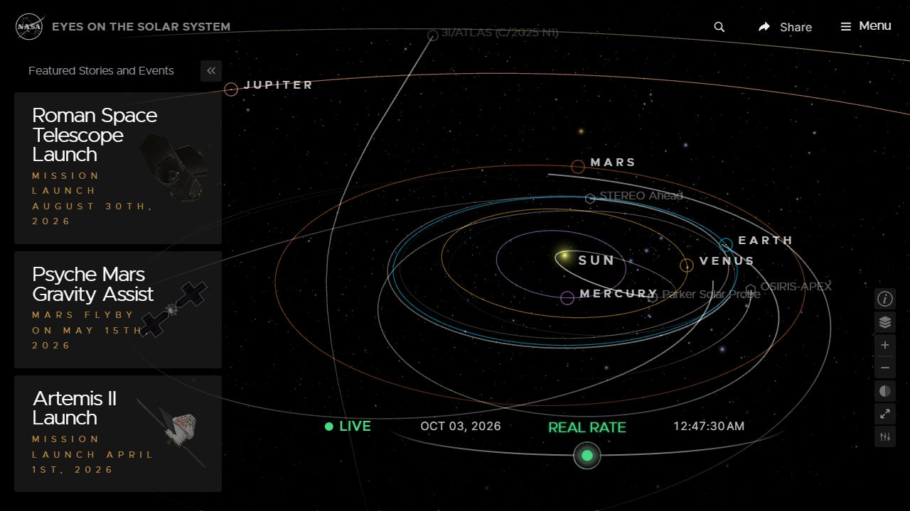

가능성의 끝 / 디자인 조사2026.10.03
심우주 관측 장치
우주 링, 장의 위치, 선택 동작을 하나의 정밀한 인터페이스로 구성하는 방향. 공식 제작 자료와 실제 우주 탐색 화면을 확인했습니다. 아래 적용안은 조사에서 도출한 제안입니다.

01
Blade Runner 2049
흑백의 원과 직선, 노드 사이의 관계, 큰 여백. 기존 우주 링과 8개 장이 목차의 구조를 직접 보여주게 합니다.
Wallace Corp 화면 · Territory Studio 원본
02
Oblivion
선명한 산세리프와 정렬, 작은 숫자, 의미 있는 강조색. 표지·장 제목의 획을 기계적으로 정돈하고 선택 상태에 색을 집중합니다.
Light Table UI · GMUNK / Universal Pictures 원본
03
Dune
일정한 눈금, 얇은 빛, 실제 장치의 깊이. 링의 위치와 선택에 맞춰 움직임이 정확히 반응하도록 설계합니다.
Ornithopter 계기 · Territory Studio 원본
04
NASA Eyes
우주가 화면의 중심이 되고 이름과 도구가 그 주변에 붙는 구성. 우주의 크기를 유지하면서 선택한 장의 정보만 드러냅니다.
NASA · 실제 실행 화면, 2026.10.03 캡처사이트에 적용할 기준
기하학적인 제목과 목차
한글은 획이 선명한 산세리프. 장 번호는 고정폭 숫자. 제목, 선택한 장, 읽기 동작이 같은 기준선을 공유하도록 구성합니다.
제한된 빛과 색
검은 바탕과 차가운 백색에 아이스 시안 한 가지. 선택 노드와 주요 동작을 가장 밝게 표시합니다.
선택에 반응하는 우주
장을 고르면 노드, 시점, 장 제목이 함께 반응합니다. 작은 선과 눈금은 장의 위치와 선택 상태를 전달하는 곳에 사용합니다.
덜어낼 요소 · 가짜 좌표, 무작위 영문 문구, 의미 없이 변하는 숫자, 반복되는 레이더 원, 겹친 테두리 패널, 과한 글리치. 본문은 읽기 편한 밀도와 대비를 유지합니다.